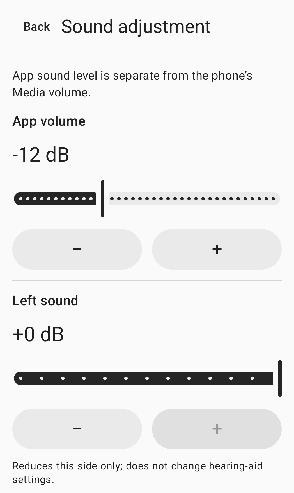

Manual ambient sound controls
Nearby sound,your controls.
Sound from your phone microphone,sent to headphones you select.Adjust level, left/right and tone yourself.
See how to useNot yet publicly released.

How to use
Connect, adjust, then start.
Connect
Connect headphones to this phone, then select the output in the app. Wired/USB is the default. For Bluetooth, enable experimental mode and select the connected output yourself.
Adjust
Adjust app level, left/right and tone. Phone media volume is a separate setting. Put on your headphones and prepare at a low volume.
Start
Allow microphone access, review the session notice and press the consent/start button. Permission alone does not start the microphone. Stop from the app or session notification.
Sound controls
Choose the adjustments yourself.
Controls inside the app and your phone’s media volume are separate settings.
App level
Adjust the level sent to your selected headphones in the app. Check your phone’s media volume as well.
Left and right
Reduce each side separately. These controls do not change the headphones’ or a hearing aid’s own settings.
Tone
Adjust tone manually. The app does not automatically compensate based on a hearing test.
The image above is a crop of the actual sound-control screen. Right-side and tone controls are outside the crop.
Frequently asked questions
Before you get started
Can I use Bluetooth headphones?
Bluetooth is experimental. Connect the headphones to this phone, enable experimental mode and select the output yourself. Delay and sound quality depend on your phone and headphones.
Does reconnecting headphones restart the session?
No. Losing the route, audio focus or microphone permission ends the session. Reconnecting headphones or reopening the app does not start it again. Start explicitly when ready.
What if my headphones are missing from the list?
For wired or USB headphones, check the connection to this phone and refresh the output list in the app. For Bluetooth, check the phone’s media-audio connection, enable experimental mode in the app, then select the connected output. The support page has more guidance.
How do I delete recordings or app data?
The app does not create microphone recording files. See the local data guide to remove sound settings, permission-request history or an optional latest trial receipt.
Please check before use.
For adults aged 18 or older with normal hearing, HearAssist is a manual ambient sound-control tool. It is not intended to compensate for hearing loss, replace hearing aids, test hearing, diagnose or treat a condition.
Speech clarity, physical latency and acoustic safety have not been established. Complete noise removal and zero latency are not guaranteed.
The app has not been publicly released in stores. This is a product information and support site.